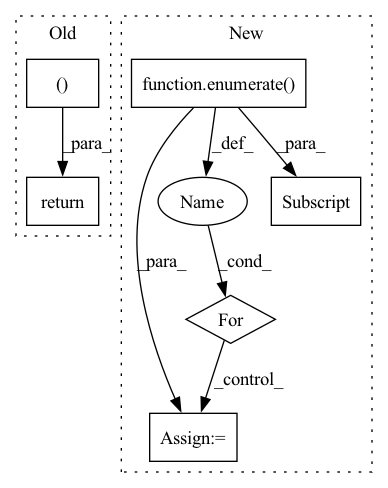

Pattern ID :12034
Before Change
if pred_word in self.gen_stop_toks \
or len(pred_word) < 1 \
or len(self.predicted) > self.env_max_length:
return predicted, True, self.tokenizer.convert_tokens_to_string(predicted)
else:
predicted += [pred_word]
return predicted, False, self.tokenizer.convert_tokens_to_string(predicted)
After Change
predicted_list = {}
predicted_list_end = {}
with torch.inference_mode():
for i, (v_id, predicted, predicted_end) in enumerate( zip(vocab_id, self.predicted, self.predicted_end)) :
predicted_list_end[i] = False
if not predicted_end:
pred_word = self.actions[v_id]
if pred_word in self.gen_stop_toks \
or len(pred_word) < 1 \
or len(self.predicted) > self.env_max_length:
predicted_list_end[i] = True
predicted_list[i] = [pred_word]
else:
predicted_list[i] = [pred_word]
else:
predicted_list_end[i] = True
predicted_list[i] = [""]
for i , (l, e) in enumerate(zip(predicted_list.values(), predicted_list_end.values())):
self.predicted[i] = self.predicted[i] + l
self.predicted_end[i] = e
return self.predicted, all(self.predicted_end), [self.tokenizer.convert_tokens_to_string(i) for i inIn pattern: SUPERPATTERN
Frequency: 5
Non-data size: 6
Instances Fragment ID: 40702925
Project Name: voidful/textrl
Commit Name: 285b19d7c0829ec1176b5c61e6ed3960744d307c
Time: 2023-02-06
Author: voidful.stack@gmail.com
File Name: textrl/environment.py
M Class Name: TextRLEnv
N Class Name: TextRLEnv
M Method Name: _predict(2)
N Method Name: _predict(2)
M Parent Class: gym.Env
N Parent Class: gym.Env
M File Name: textrl/environment.py
N File Name: textrl/environment.py
M Start Line: 86
M End Line: 95
N Start Line: 98
N End Line: 121
Before Change
self.prob_container = t.index_select(self.prob_container, 0,
index.squeeze(1).view(self.batch_size * self.beam_size))
self.prob_container = self.prob_container.view(self.batch_size, self.beam_size, 1)
return self.token_container, self.prob_container
After Change
self.prob_container = t.index_select(self.prob_container, 0,
index.squeeze(1).view(self.batch_size * self.beam_size))
self.prob_container = self.prob_container.view(self.batch_size, self.beam_size, 1)
for i, v in enumerate( self.token_container):
if v[-1] != self.eos_id:
self.length_container[i] += 1
// TODO not usable
// return self.token_container, self.length_container Fragment ID: 40702927
Project Name: tongjinle123/speech-transformer-pytorch_lightning
Commit Name: 4c252adbe4ede0383cbebc47de6d8cf6c1da4227
Time: 2020-02-17
Author: lancertong@live.com
File Name: src/model/modules/beam_searcher.py
M Class Name: BeamSteper
N Class Name: BeamSteper
M Method Name: step(2)
N Method Name: step(2)
M Parent Class:
N Parent Class:
M File Name: src/model/modules/beam_searcher.py
N File Name: src/model/modules/beam_searcher.py
M Start Line: 55
M End Line: 64
N Start Line: 55
N End Line: 67
Before Change
padding_value=self.tokenizer.eos_token_id,
)
return input_ids, attention_mask
class TrainCollator:
def __init__(self, tokenizer, max_length, dataset):After Change
attention_mask = torch.zeros((len(batch), self.max_length), dtype=torch.bool)
tokenized = [x["tokens"] for x in batch]
for i, ids in enumerate( tokenized):
length = min(len(ids), self.max_length)
input_ids[i, :length] = torch.tensor(ids[:length], dtype=torch.long)
labels[i, :length] = torch.tensor(ids[:length], dtype=torch.long)
attention_mask[i, :length] = 1
return {
"input_ids": input_ids, Fragment ID: 40702926
Project Name: bminixhofer/gerpt2
Commit Name: 418a2f76201cfe8d18c15690f030242b65b134e7
Time: 2020-11-15
Author: bminixhofer@gmail.com
File Name: utils.py
M Class Name: ValCollator
N Class Name: ValCollator
M Method Name: __call__(2)
N Method Name: __call__(2)
M Parent Class:
N Parent Class:
M File Name: utils.py
N File Name: utils.py
M Start Line: 12
M End Line: 26
N Start Line: 11
N End Line: 27
Before Change
dataset_output = torch.cat(output_list, dim=0).numpy()
dataset_label = torch.cat(label_list, dim=0).numpy()
return ocean_acc_avg, ocean_acc, dataset_output, dataset_label
def data_fmt(self, data):
for k, v in data.items():
data[k] = v.to(self.device)After Change
ocean_acc_avg_rand = np.round(ocean_acc_avg.astype("float64"), 4)
keys = ["O", "C", "E", "A", "N"]
ocean_acc_dict = {}
for i, k in enumerate( keys):
ocean_acc_dict[k] = np.round(ocean_acc[i] , 4)
return ocean_acc_avg_rand, ocean_acc_dict, dataset_output, dataset_label
def data_fmt(self, data): Fragment ID: 40702923
Project Name: liaorongfan/deeppersonality
Commit Name: 5a924bc31a78ba2fcab3f3879e8d6afd628b86de
Time: 2021-11-03
Author: 15670381505@163.com
File Name: dpcv/engine/bi_modal_trainer.py
M Class Name: BiModalTrainer
N Class Name: BiModalTrainer
M Method Name: test(3)
N Method Name: test(3)
M Parent Class: object
N Parent Class: object
M File Name: dpcv/engine/bi_modal_trainer.py
N File Name: dpcv/engine/bi_modal_trainer.py
M Start Line: 100
M End Line: 100
N Start Line: 101
N End Line: 106
Before Change
preds, stresses = mds_torch(pre_dist_mat, weights=weights,iters=iters,
tol=tol, verbose=verbose)
if not fix_mirror:
return preds[0], stresses[0]
return fix_mirrors_torch(preds, stresses, N_mask, CA_mask, C_mask)
def mdscaling_numpy(pre_dist_mat, weights=None, iters=10, tol=1e-5,After Change
// no need to caculate multiple mirrors - just correct Z axis
phi_ratios = calc_phis_torch(preds, N_mask, CA_mask, C_mask, prop=True)
for i,pred in enumerate( preds):
// fix mirrors by (-1)*Z if more (+) than (-) phi angles
if phi_ratios < 0.5:
preds[i, -1] = (-1)*preds[i, -1]
if verbose == 2:
print("Corrected mirror in struct no.", i)
return preds, stresses Fragment ID: 40702929
Project Name: lucidrains/alphafold2
Commit Name: 8d169f1f66117683e83ed478da0ab5290d994c2b
Time: 2021-02-19
Author: ericalcaide1@gmail.com
File Name: alphafold2_pytorch/utils.py
M Class Name: AnonimousClass
N Class Name: AnonimousClass
M Method Name: mdscaling_torch(9)
N Method Name: mdscaling_torch(9)
M Parent Class:
N Parent Class:
M File Name: alphafold2_pytorch/utils.py
N File Name: alphafold2_pytorch/utils.py
M Start Line: 614
M End Line: 621
N Start Line: 633
N End Line: 644